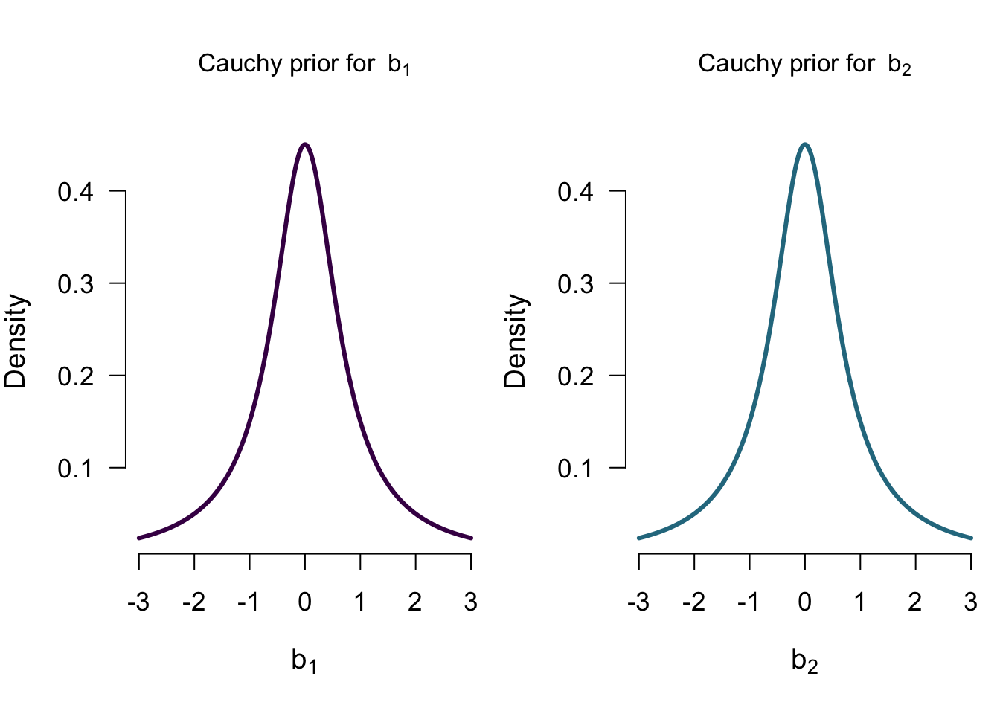
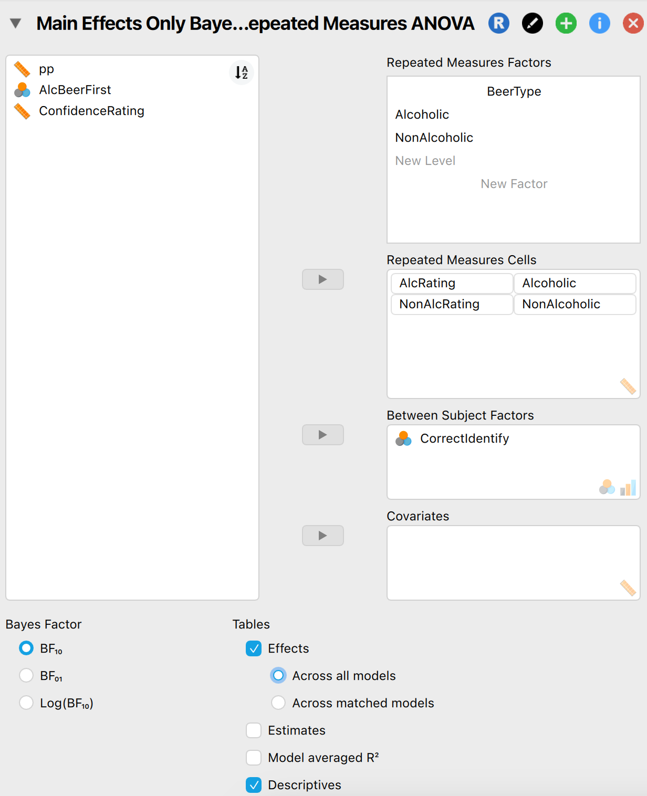
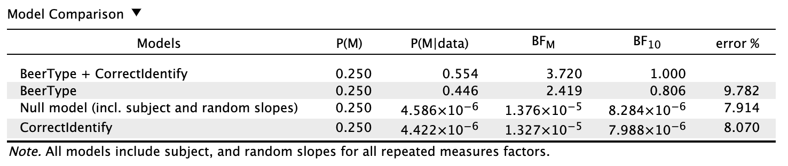
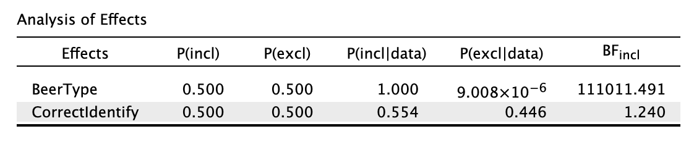
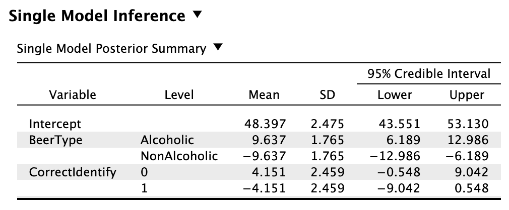
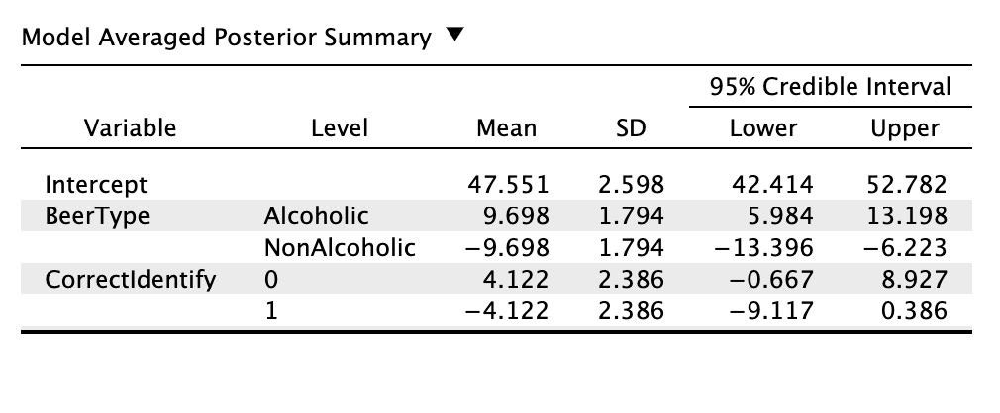

7 ANOVA (draft)
This chapter is based on a Bayesian ANOVA tutorial article by van den Bergh et al. (2020) (downloaded here or viewed here).
So far, we have discussed analyses that are fairly simple in terms of the number of parameters of interest. We specified different models that made different statements about values of this single parameter (e.g., \(\theta\) for the binomial test, \(\delta\) for the \(t\)-tests, or \(\rho\) for the correlation), and conducted hypothesis tests by pairwise comparison of two models (e.g., ?fig-beer-tastiness-correlation-posterior). For more complex scenario’s (i.e., with more predictor variables), many different models can be constructed, each with multiple parameters. In this chapter, we will shine a Bayesian light on the ANOVA, and see how the Analysis of Variance can benefit from the Bayesian tools we have discussed so far.
In ?sec-bayesian-ttest, the Bayesian \(t\)-test was introduced. Since a difference in means (standardized or not) is on a continuous scale, without hard bounds (as opposed to the correlation, or proportion), the type of distribution that was used to characterize each model’s predictions was the Cauchy distribution. For the \(t\)-test, there is only one parameter needed to model the difference between two groups. For instance, if we stick to the beer example, and we are trying to model the tastiness ratings (\(y\)) by looking at whether the beer contained alcohol, or not (\(x = 1\) for alcoholic, while \(x = 0\) for non-alcoholic). We can now write the \(t\)-test model as a linear regression, where we model the outcome variable \(y\) as a function of an intercept (\(b_0\)) and a single regression coefficient that models the group difference (\(b_1\)):1 \[ y_i = b_0 + b_1 \times x_i. \] By modeling tastiness rating as such, the variable \(x\) determines whether we add \(b_1\) or not: if it equals 1 (alcoholic beer), then our prediction equals \(b_0 + b_1\); if it equals 0 (non-alcoholic beer), our prediction equals \(b_0\). As such, the parameter \(b_1\) determines the group difference: we can employ a hypothesis test to see if \(b_1\) equals 0 or not and therefore whether the tastiness ratings meaningfully differ between the two conditions. Our hypotheses are as follows, with the alternative hypothesis’ predictions characterized by a Cauchy distribution, with its scale set to 0.707: \[\mathcal{H_0}: b_1 = 0 \] \[\mathcal{H_1}: b_1 \sim Cauchy(0.707).\] In ?sec-bayesian-ttest we saw how the Cauchy prior can be specified, how to test these hypotheses through the Bayes factor, and how to interpret the posterior distribution for parameter estimation. The bottom line of the Bayesian \(t\)-test is that we can compare the predictions made by the two hypotheses: \(\mathcal{H_0}\) goes all-in on 0 being the true value, while \(\mathcal{H_1}\) spreads its bets more, across a range of values for \(b_1\) (the exact spread of its bets is characterized by the Cauchy distribution). For hypothesis testing (or, model selection), we can look at the Bayes factor that takes the ratio of each model’s marginal likelihood (see ?sec-marginal-likelihood) of each model: how likely are the data under \(\mathcal{H_0}\), and how likely are the data under \(\mathcal{H_1}\)?
What we will do the coming section, is expand on this idea of modeling differences between groups, and comparing the marginal likelihoods of two models for hypothesis testing. We then generalize the procedure to allow for more than 2 groups, and more than 1 predictor variable (i.e., ANOVA).
7.1 More Beer Analyses
Continuing with the beer example, we can expand on the regression equation above, and add another regression weight that encodes whether someone correctly identified the beer:
\[ tastiness = b_0 + b_1 \times alcoholic + b_2 \times correct. \] Here, the variables alcoholic and correct are both indicator variables (taking on values 0 or 1), to indicate whether someone was rating the alcoholic beer or not, and whether they were correct or not. These indicators thus determine if we add \(b_1\) or \(b_2\) to our estimate for the tastiness rating. With another variable added, we now have various models that we can make:
- \(\mathcal{M_0}\): model with only the intercept \(b_0\)
- \(\mathcal{M_A}\): model with the intercept \(b_0\) and the main effect of alcohol \(b_1\)
- \(\mathcal{M_C}\): model with the intercept \(b_0\) and the main effect of correct identification \(b_2\)
- \(\mathcal{M}_{A+C}\): model with the intercept \(b_0\) and the two main effects
Each of these models makes various statements about all the possible regression weights. Again, what can help is think of the betting analogy: the model is at the casino, and bets money on likely values of each of the parameters. Some models go “all-in” on some values (e.g., Sarah and Paul from ?sec-models-make-predictions, who did not spread bets across multiple values, but put all money on 0). For instance, \(\mathcal{M_A}\) will spread their bets across multiple values for \(b_1\), but will strictly bet on 0 for \(b_2\). In doing so, \(\mathcal{M_A}\) allows for difference in tastiness ratings between alcoholic and non-alcoholic beer, but is not modeling any effect of whether the beer was correctly identified. Exactly how \(\mathcal{M_A}\) spreads their bets on the values for \(b_1\) depends on how their prior distribution is specified.
7.1.1 Priors in ANOVA
In Bayesian inference, the prior distribution of a model characterizes what a model predicts. Typically, a null model will have a spike prior on 0, while an alternative model will allow the parameter to vary. Exactly how the model allows the parameter to vary is indicated by its prior distribution. For the \(t\)-test, the prior distribution is specified for the effect size \(\delta\), which is generally done by the Cauchy distribution (?sec-prior-ttest discusses the Cauchy prior more elaborately). This distribution has a single scale parameter that can be adjusted, to make the model bet an a wider or narrower range of values. By default, the scale parameter is set to \(\frac{1}{\sqrt{2}} = 0.707\), which means that the alternative model bets around 50% of its money on values between -0.707 and 0.707. The reasoning behind this is that these are conventional effect sizes found in social sciences.
In expanding to ANOVA (or, more than 1 effect, or more than 2 groups), we are adding additional \(b\) parameters to the model. Each of these parameters requires a prior distribution, to make concrete what each model is predicting. The generalization for the Cauchy distribution is here to instead use a multivariate Cauchy distribution for each factor variable, which is also governed by a single scale parameter.2
The reasoning with the prior distributions in the ANOVA is exactly the same as for the \(t\)-test: the prior reflects which values of the parameter are being bet on. Based on the observed data, some of those values predicted the data well, and some other will have predicted the data poorly. We can look at how well the model predicted overall, by looking at how well it predicted the data on average: averaged over all the values that it bet on. The average quality of a model’s predictions is its marginal likelihood.
The figures below illustrate how each of the three “alternative” models \(\mathcal{M_A}\), \(\mathcal{M_C}\), \(\mathcal{M_{A+C}}\) can formalize their predictions through their prior distributions. When a model posits there is no effect of a predictor, such as \(\mathcal{M_A}\) for \(b_2\), they go “all-in” on the value and have a spike prior at 0.


Once again, different models predict different things about the data, and their predictions are made concrete by their prior distributions. With the predictions of each model formalized, we can take a look at the observed data, and see how well each model predicted that data!
7.1.2 Results
For each model, we can compute the marginal likelihood: how well did all values postulated by the model (as reflected by the prior distributions) match the data, on average? Now, in the earlier chapters it was still somewhat comprehensive to show these calculations. As our models grow more complex however, the computations that underlie the analyses become extremely complex (the specifics are also out of my own grasp), and we need modern computers with magical algorithms to compute the marginal likelihoods of each model. Thankfully, in 2023 everyone possesses a fast enough computer (ideally with JASP installed on it), so conducting a Bayesian ANOVA can be done with the press of a button.3 Figure 7.2 below shows how the interface looks for specifying the analysis in JASP. Since we have a mixed design, we use the RM ANOVA, where both within and between subject factors can be specified (note: we omit the interaction effect for now).

7.1.3 Model Comparison
With JASP having done the computational lifting, we can either do parameter estimation through a credible interval, or model comparison/hypothesis testing through the Bayes factor. For starters, we can do model comparison by looking at the first table that JASP outputs in the RM ANOVA:

There are quite some numbers in there so let’s unpack these one by one:
- P(M): The prior model probability - how likely is each model, before seeing the data? Typically we evenly divide the odds between all models. Here, we have four models, so assign 0.25 to each model.
- Interpretation for BeerType model: “Before looking at the data there is a 25% probability that this model is the true model, out of these four models”.
- P(M|data): The posterior model probability - how likely is each model, after seeing the data? For this column, all values also sum to 1.
- Interpretation for BeerType model: “After looking at the data there is a 44.6% probability that this model is the true model, out of these four models”.
- \(\textbf{BF}_{M}\): The posterior model odds - the updating factor from prior to posterior model probability.
- For the BeerType model, we compute this by taking the prior and posterior odds: \(0.446/(1 - 0.446) \times (1 - 0.25)/0.25 \approx 2.42\).
- Interpretation for BeerType model: “The data are 2.42 times more likely under this model, than under all the other models combined”
- \(\textbf{BF}_{10}\): The pairwise Bayes factor - how likely are the data under this model, compared to another model? By default, JASP gives the comparison between the model in the row, and the best model (i.e., with the highest posterior model probability). For instance, to compute \(\text{BF}_{10}\) for the “BeerType” model, we take the ratio of its posterior model probability, and divide it by the posterior model probability of the best model (i.e., “BeerType + CorrectIdentify”): \(0.446 / 0.554 \approx 0.81\).
- Interpretation for BeerType model: “The data are 0.81 times more likely under this model, than under the best model”.
- The error percentage is an estimate of the numerical accuracy of the underlying algorithms. See the section below for a more elaborate explanation.
There are many different numbers to look at here, for each model. Personally, I would say the two Bayes factor columns are the most informative: these allow direct comparisons between the models. Based on which column (\(\text{BF}_{M}\) or \(\text{BF}_{10}\)), there are different comparisons. While \(\text{BF}_{10}\) shows the pairwise comparisons (which is the Bayes factor we have seen before in this booklet), \(\text{BF}_{M}\) shows a comparison between a single model, and all other models combined. Based on either of the BF columns, we can see that the model with the two main effects predicted the data the best (so in in the first row, \(\textbf{BF}_{10}\) compares the two main effects model to itself), although the model with only BeerType is not doing so much worse: the data are 0.81 times more likely under this model, than under the model with the two main effects.
Because \(\textbf{BF}_{10}\) is a ratio between two models’ marginal likelihoods, we can use the Bayes factors in that column to conduct additional model comparisons. For instance, to compare the BeerType model directly to the null model, we can take those two models’ \(\textbf{BF}_{10}\) values and divide them by each other: \(0.806 / 8.284e-6 \approx 97296\). Therefore, the data are 97296 times more likely under the BeerType model than under the null model. This property is known as Bayes factor transitivity.
So far, this procedure is fairly similar to the frequentist ANOVA, in the sense that we are comparing different model to each other (although here we are using way more intuitive and useful model comparison metrics…). However, the Bayesian ANOVA also allows us to look at the combined evidence in favor of the inclusion of a certain predictor. To do so, we tick the “effects” checkbox in JASP.
7.1.4 Analysis of Effects
Instead of looking at individual models, and how well they predicted the data, we can instead look at each predictor variable, and how well the models predicted that included that predictor. In doing so, we are again comparing groups of models, instead of comparing a single model to a single model. For instance, if we want to quantify the evidence we have for including BeerType as a predictor variable, we can look at how well the models predicted that included it, versus the models that did not include it. By doing so, we are comparing the models [BeerType; BeerType + CorrectIdentify] to the models [null; CorrectIdentify].
For this comparison, we can look at the metrics presented in the Analysis of Effects table:

Again there are quite some numbers to unpack. Below they are defined, including an example, and how they relate to the model comparison table.
- P(incl): The prior inclusion probability. Here we sum all the prior model probabilities of the models that include this predictor.
- CorrectIdentify is included in 2 models that each have a prior model probability of 0.25, so its prior inclusion probability is 0.5.
- P(incl|data): The posterior inclusion probability. Here we sum all the posterior model probabilities of the models that include this predictor.
- CorrectIdentify is included in 2 models that have a posterior model probability of 0.563 and something very small, so its posterior inclusion probability is approximately 0.563.
- \(\textbf{BF}_{incl}\) : The inclusion Bayes factor. It quantifies the change from prior inclusion probability to posterior inclusion probability for each component.
- For CorrectIdentify, this is calculated as follows: \(0.563/(1 - 0.563) * (1 - 0.5)/0.5 \approx 1.29\)
The most important column here is the inclusion Bayes factor: it quantifies how well the models with a certain predictor do, compared to the models without. We can see here that there is overwhelming evidence in favor of including BeerType, but that there is not so much evidence for including CorrectIdentify (also no evidence in favor of its exclusion - this is known as absence of evidence, rather than evidence of absence).
7.1.5 Single Model Inference
To dive deeper into what a single model predicts, we can look at the “Single Model Inference” option in JASP. Here, we can specify a specific model, and then get estimates of its various parameters (i.e., its \(b\)’s). Below is a table for the estimates of the model with the two main effects:

What the table presents here, are the mean estimates (and credible intervals) for the group differences. It is encoded a bit differently, such that \(0.5b\) is added to/subtracted from the alcoholic and non-alcoholic condition. Still, it characterizes what this specific model predicts for certain participants in certain situations. For instance, if we had to give our best guess of a person tasting a non-alcoholic beer, who correctly identified it, based on the model with two main effects? \[48.4 + (-9.637) + (-4.151) = 34.552\] And if they would have guess incorrectly: \[48.4 + (-9.637) + (4.151) = 42.854\]
7.1.6 Model Averaging
Instead of looking at a single model’s predictions, we can combine all the models into a single prediction. Since each model makes different predictions, we can combine their predictions by model averaging. This method weighs each model’s prediction by their posterior model probability, which ensures that the models that predicted the best, will also influence the model averaged predictions the most. A very silly cartoon that illustrates this concept can be found here. The model averaged estimates are shown below. Since they are mostly dictated by the model with two main effects (the best model), these estimates do not differ so much from the previous estimates. In the same way, we can request visual representations of these estimates by checking the option for “model averaged posteriors” (the plots might need some resizing). Alternatively, individual model’s posterior distributions can be requested in the “Single Model Inference” tab.
{kind=link}

7.1.6.1 Error percentage
In order to obtain the marginal likelihood and posterior distributions in the Bayesian ANOVA (and many Bayesian analyses), a type of method called Markov chain Monte Carlo (MCMC) sampling is used. Since these methods are sampling-based, it introduces slight variations in the results. For instance, running the same Bayesian ANOVA twice will lead to slight fluctuations in the Bayes factors. In JASP, the degree of fluctuation is indicated by the “error %” column. These percentages indicate how much the Bayes factor will fluctuate from run to run. Generally, having an error % below 20 (or 10, if you want to be more strict) is acceptable: it means that a Bayes factor of 10 will deviate between 8 and 12, which does not change its qualitative interpretation. See also this footnote in the tutorial paper.
7.2 Even More Beer Analyses - Interaction Effect?!
As practice, try adding an interaction effect between BeerType and CorrectIdentify. What do you conclude?
van den Bergh, Don, Johnny Van Doorn, Maarten Marsman, Tim Draws, Erik-Jan Van Kesteren, Koen Derks, Fabian Dablander, et al. 2020. “A Tutorial on Conducting and Interpreting a Bayesian ANOVA in JASP.” L’Année Psychologique/Topics in Cognitive Psychology. 120: 73–96.
For an extra primer on how to write ANOVA as a regression, please read here↩︎
Due to some underlying computational reasons, the scale is specified in a different way in the Bayesian ANOVA in JASP, compared to the \(t\)-test. To get perfect agreement between the t-test and the ANOVA, the scale parameter for the ANOVA should be set to \(\frac{s}{\sqrt{2}}\), where \(s\) is the scale used for the \(t\)-test. For example, if the prior scale is set to 0.707 for the \(t\)-test, the BF will be the same for the \(t\)-test and ANOVA if we conduct an ANOVA with its scale set to \(\frac{0.707}{\sqrt{2}} = 0.5\).↩︎
Although transitioning more to this “black box” framework is not so satisfying as being able to show all the computations.↩︎